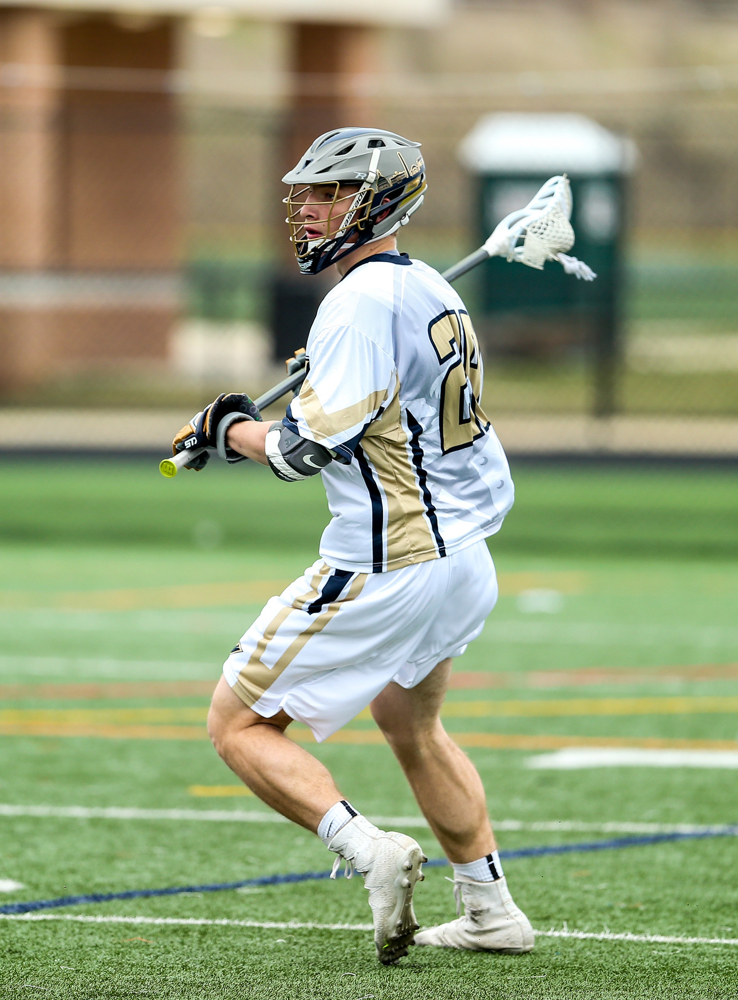
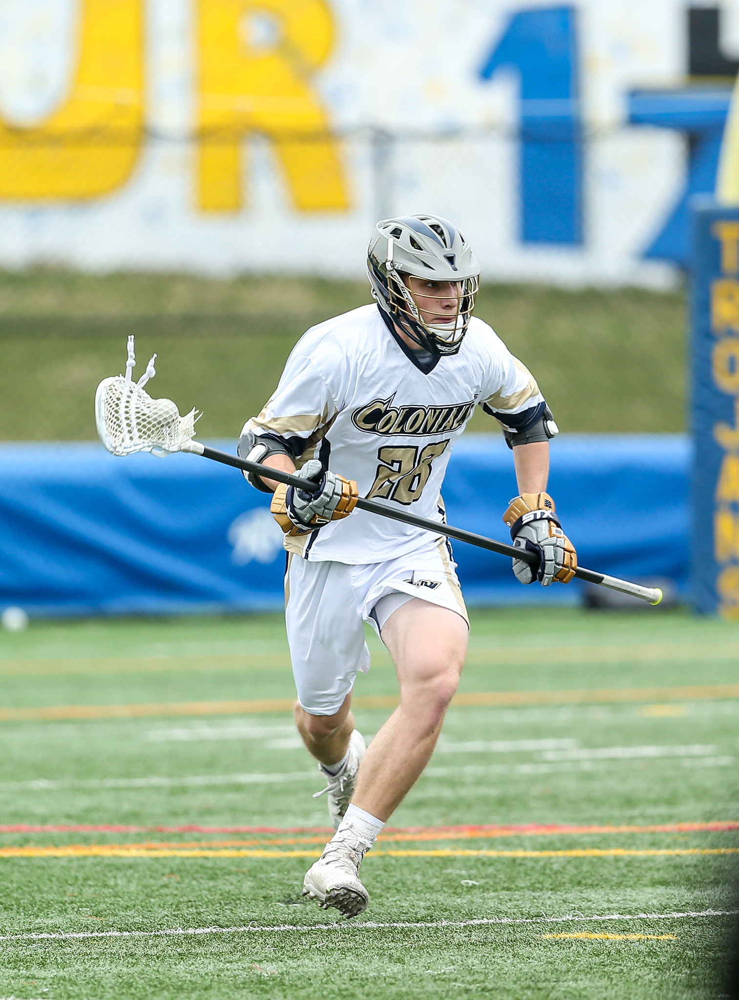

Billy Miller
I am a student at the George Washington University persuing a Bachelor of Science in Computer Science.
Experience
Learning Assistant
Assist with instruction during Software Engineering and hold office hours twice per week.
Software Engineering Intern
Developed services to support portfolio managers in High Income Asset Management.
Student Tutor
Provided tutoring and planned and held review sessions for Chemistry and Computer Science.
Maintenance Staff
Maintained buildings and grounds, assisted members, maintained lake safety.
Education
George Washington University
GPA: 4.00
Winchester High School
GPA: 3.98
Skills
- Agile Development & Scrum
Lacrosse
I am the Captain and Vice President of the George Washington Men's Lacrosse team. We compete in the highly competitive SELC confrence of the MLCA. We practice three to four times a week and travel on many weekends in the spring. As the Captain and Vice President I handle much of the scheduling and administrative work during the off season.
 Hiking
Growing up I learned to love the outdoors, especially the White Mountains of New Hampshire. especially once I could drive I would try to go whenever I got a chance. There are 48 mountains over 4,000 feet in New Hampshire and my goal is to hike all of them. So far I have completed 22 of the 48.

Awards & Certifications
- Tau Beta Pi Sophmore of the Year 2018
- Outstanding Academic Achievement Award
- Karlgaard Scholarship Recipient